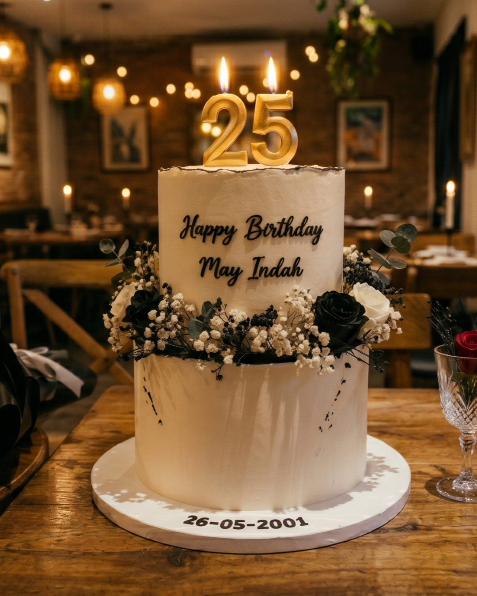
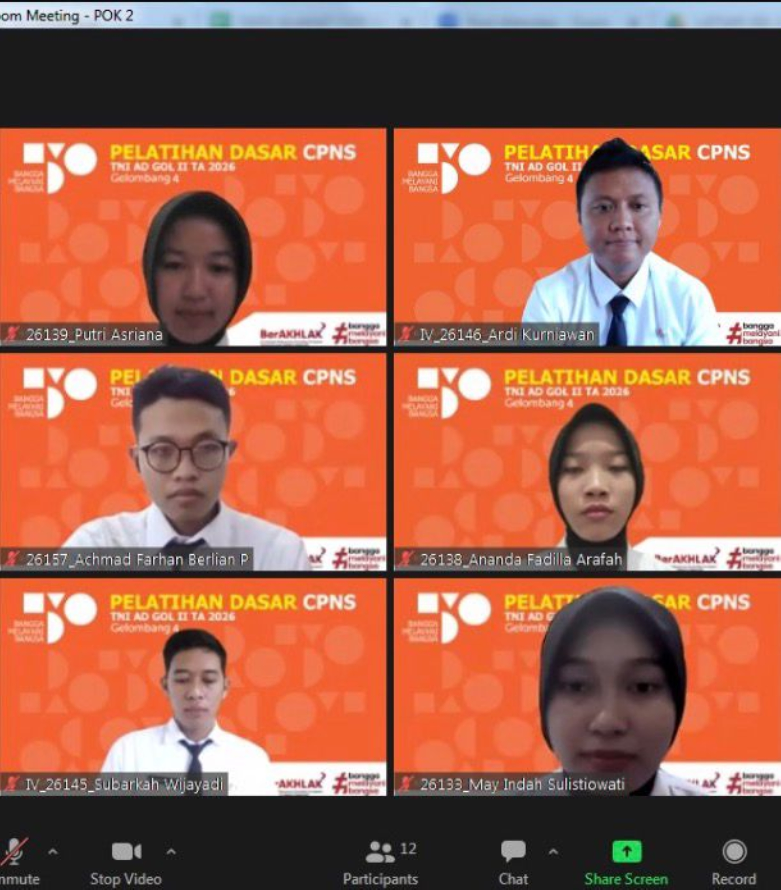
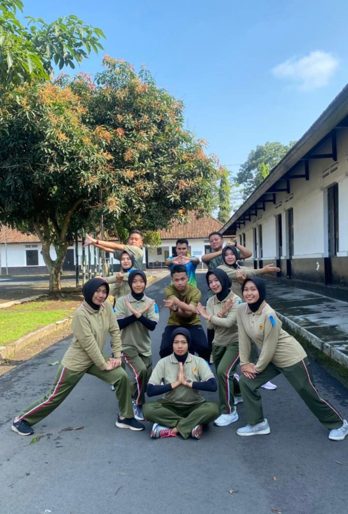
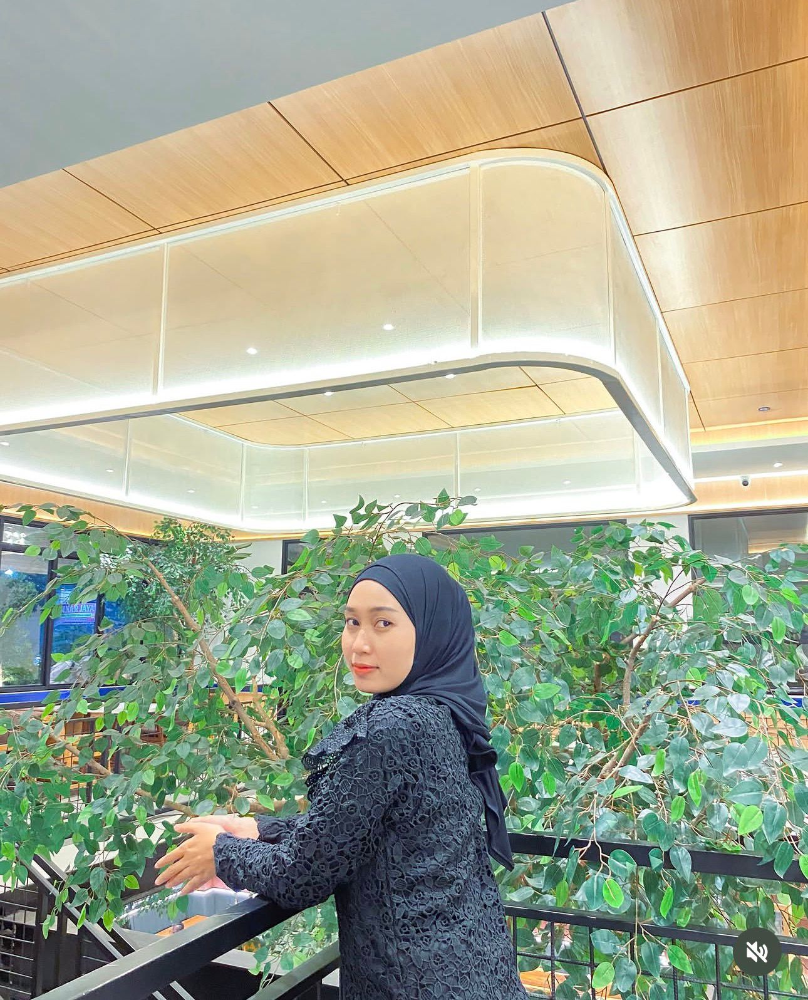

Happy Birthday yang Ke-25 Tahun
May Indah Sulistyowati, teman latsarku yang paling kufavoritkan
Aku bikin website kecil ini bukan cuma buat sekedar ngucapin selamat ulang tahun ke kamu atau sekedar buat kado ultahmu may, tapi aku pengen sedikit cerita, minta maaf, memberikan do'a baik, mengucapkan rasa syukur, serta ucapan terimakasih yang sebesar-besarnya karena keberadaanmu di dalam hidupku Mayy. Aku harap ini bukan yang terakhir kalinya aku memberi ucapan-ucapan kecil seperti ini ke kamu, May. Tapi, kalau semua yang kulakukan sampai saat ini ternyata justru menjadi sebuah gangguan buat kamu, dengan senang hati aku akan menjadikan ini yang terakhir kalinya kok May.
Harapan Buat Dirimu Sendiri
Sebelum lanjut, tiup lilinnya dulu ya mayy.

Lilinnya masih nyala nih May. Tutup mata kamu sebentar yaa, lalu ucapkan harapan dan doa terbaik buat diri kamu sendiri May.
Yang Pertama
Hari Pertama Kita Bertemu
Kamu tau gak May hal apa yang paling aku benci dalam pekerjaanku ini? Ya, aku paling benci sama militer. Sejak awal aku benci kalau harus melakukan hal-hal yang dimiliterkan. Seperti halnya latsar kemarin, aku paling benci sama klasikalnya, aku paling benci juga sama PBB, apel, dan semacamnya. Tapi, satu minggu itu bener-bener berbeda. Satu minggu itu jadi salah satu waktu yang paling bikin aku bahagia, satu minggu yang paling kufavoritkan, dan satu minggu yang mengubah hidupku. Aku suka sama kegiatan militer di minggu itu. Aku suka PBB di waktu itu. Semua itu karena ada kamu di dalamnya May :)
Selain itu, aku juga jadi suka sama kipas angin, aku suka warna hitam, aku suka Rindam, aku suka Magelang, aku pengen latsar lagi, aku gak sabar buat Komcad dan ketemu kamu lagi. Bahkan, lagu "Shape of My Heart" yang aku putar ini aku puter setiap hari karena ini satu-satunya lagu yang mengingatkanku sama latsar, dan latsar adalah satu-satunya moment yang menghubungkan aku sama kamu.
Secuil Momen
4 Momen Kecil yang Bikin Aku Cinta sama Kamu
Pertama Kali Notice Kamu secara Langsung
Waktu pertama kali notice kamu secara langsung, entah kenapa aku bener-bener seperti liat manusia yang berbeda, entah kenapa kamu keliatan lebih cantik dari semua orang yang ada di kelas itu, entah kenapa kamu keliatan lebih bersinar daripada semua orang yang ada di kelas itu. Dan entah kenapa tiba-tiba kamu jadi orang yang paling sulit kuajak ngobrol saat itu. Waktu itu aku bener-bener terpesona sama kamu hahaha. Aku bener-bener bersyukur Allah sudah menciptakan manusia seindah kamu.
Moment Pertama Kali Aku Meleleh sama Senyum Kamu
Waktu apel malam itu, waktu aku lagi nyiapin barisan, aku gak sengaja noleh ke arah kamu dan liat kamu ketawa. Bener-bener semua keteganganku hilang seketika waktu itu, aku bener-bener ga merasakan sedikitpun energi negatif dari ketawa kamu may. Senyum dan ketawa kamu bener-bener bikin orang yang ngeliatnya jadi teduh. Sejak itu juga aku jadi ga kuat natap kamu lama-lama, karena senyum kamu bener-bener bikin meleleh wkwk. Seakan-akan aku pengen mengerahkan semuanya demi melindungi senyum kamu. Semoga senyum indah kamu tidak pernah pudar selamanya May.
Moment Waktu Aku Mulai Jatuh Cinta sama Kamu
Kemarin aku udah cerita garis besarnya, intinya berkat kamu aku bisa melewati presentasi aktualisasi kemarin dengan baik. Aku bener-bener berterimakasih sama kamu Mayy. Kalau gaada kamu, mungkin aku bakal gelagapan waktu presentasi. Kamu bener-bener hebat Mayy, bisa selalu memberikan energi positif kepada orang lain. Dan puncaknya, aku bener-bener seneng banget waktu kamu ngevideoin aku waktu penyerahan piagam penghargaan. Seolah aku punya temen yang menemani aku dari 0 sampai aku berhasil. Ga ada moment yang lebih istimewa daripada itu.
Moment Waktu Kita Ketemu di Cafe
Sebenernya bener-bener moment kecil, tapi sangat berarti bagiku. Itu pertama kali aku liat kamu di luar kegiatan latsar. Aku bener-bener ga bisa berhenti memalingkan pandanganku ke kamu. Malai dari outfit, bahkan makeupnya bener-bener cocok banget buat kamu. Lagi-lagi aku mikir kok bisa selama latsar waktu daring aku ga sadar ada wanita secantik ini di kelompokku :) Terus waktu di cafe itu aku juga beberapa kali ngejokes dan kamu selalu ketawa sama jokesku, itu bener-bener diriku di pikiranku lompat2 kegirangan wkwkw.
Sedikit Memori, entah kenapa kualitas fotonya jadi jelek bgt wkwk, tapi karena aku ngejar deadline jam 00.00 jadi biarlah
Hahaha, aku sangat berharap aku bisa membuat ini versi foto kita, walaupun ga mungkin sii

Waktu Zoom
Hari Olahraga Bebas Hari Terakhir
Hari Terakhir Waktu Meet di Sakopi
Waktu Meet di Sakopi“Jika kamu mencintai seseorang maka lepaskanlah ia, jika ia kembali padamu, maka ia memang milikmu. Jika ia tidak kembali, maka sejak awal ia memang bukan untukmu” -- Ali bin Abi Thalib
Harapan Ulang Tahun
Doaku Untuk May
Selamat ulang tahun yaa May Indah. Semoga di usia kamu yang ke-25 ini, kamu bisa menjadi lebih baik dalam setiap halnya. Semoga kamu selalu diberikan kesehatan, semoga semua urusanmu dilancarkan dan dimudahkan, dan semoga kamu selalu dipertemukan dengan hal-hal baik dan orang-orang baik. Ga pernah bosen aku tiap hari ngedo'ain kamu dengan template do'a yang sama wkwkw.
Semoga kamu makin menguasai bidang kamu yaa May. Semoga kamu bisa jadi salah satu Radiografer terbaik yang selalu "Berakhlak" dalam bekerja. Pokoknya semoga pekerjaan kamu selalu berkah may, semoga capekmu berubah menjadi hal-hal yang kamu cita-citakan yang akan terwujud. Semoga kamu tidak pernah bertemu pasien yang membuat kamu tidak nyaman dan melukai hati kamu. Semoga kamu bisa melewati pekerjaan Radiologi tersulit maupun jenis2 rontgen yang belum pernah kamu kerjaan sebelumnya dengan lancarr. Semoga kamu jarang piket di hari libur supaya kamu bisa menghabiskan waktu liburmu dengan tenang dan happy.
Aku mungkin ga pinter nulis kata-kata yang bagus, aku cuma bisa ngomong apa adanya. Bahkan mungkin semua kata katamu justru bikin kamu risih dan ga nyaman. Tapi aku bener-bener berharap semoga hidup kamu selalu dipenuhi hal-hal baik. Dan setidaknya aku harap hadiah ulang tahun dariku ini bisa jadi salah satu alasan kecil kamu tersenyum hari ini.
Surat Kecil
Untuk May Indah
May, pokoknya aku mau mengucapkan banyak2 terima kasih sudah karena sudah terlahir ke dunia ini. Terimakasih telah berjuang keras sampai bisa sejauh ini. Terimakasih karena telah berusaha sampai di titik ini, di titik dimana kamu bisa jadi PNS Kemhan TNI AD, khususnya sebagai Radiografer di RST Tk. II Dr. Soedjono Magelang, karena berkat itu aku bisa ketemu dan kenal kamu, aku bener-bener mensyukuri pertemuan kita dalam lubuk hatiku yang paling dalam.
Entah siapapun jodohmu nanti, aku do'akan semoga kamu bisa bertemu dengan pria yang baik, yang mapan, yang bertanggung jawab, dan yang mencintai kamu dengan sangat tulus serta mampu membahagiakan kamu selamanya.
Pokoknya aku berharap mulai sekarang sampai selama-lamanya kamu selalu bahagia mayyyy. Kamu cantik, kamu baik, kamu punya senyum yang manis, tawa yang tulus, cara berkomunikasi yang baik, energi yang sangat positif, kesabaran tinggi, daya tarik kuat, rendah hati, penuh perhatian, berjiwa besar, cerdas, pandai, keindahan sikap, selera outfit bagus, kerja keras, penuh empati, mandiri, sifat dewasa keibuan, tulus apa adanya, membuat tenang dan nyaman, pokoknya kamu bener-bener luar biasa mayy. Kalo disuruh nyebutin semua kelebihan kamu yang aku sukai, aku bisa bikin dengan halaman sebanyak laporan aktualisasiku kemarin, tapi kalo aku disuruh nyebutin apa alasan kenapa aku bisa secinta ini sama kamu, aku bahkan ga bisa menyebutkan satu pun. Pokoknya kamu bener2 pantas mendapatkan yang terbaik Mayy.
Gift Dariku
Hadiah kecil dari aku
Sejujurnya aku berharap bisa ngasih hadiah fisik ke kamu secara langsung tepat di hari ini, tanggal 26 Juni 2026. Aku berencana ngajak kamu ke suatu tempat dan menyiapkan kue ulang tahun dan ngasih gift secara langsung ke kamu. Tapi, liat kondisi saat ini sepertinya sama sekali ga memungkinkan yaa :') Mungkin sekarang kamu udah di tahap bener-bener risih, takut, atau bahkan enggan berkomunikasi sama aku lagi. Jadi aku cuma bisa ngasih kamu hadiah kecil lewat website yang aku bikin ini.
Scan QRIS Shopeepay ini ya Mayy. Ada hadiah buat kamu, nominalnya kecil banget kok, karena yang terpenting adalah catatan ada di dalamnya, jadi tolong banget diterima ya Mayy. Ada pesan kecil yang pengen kusampein ke kamu di situ. Buat uangnya bisa kamu belikan apapun yang kamu suka may, entah kue, atau barang yang lagi kamu pengen/butuhin. Itu amanah dari aku yang harus kamu laksanakan May, kamu ga boleh menolaknya.
With all my heart
Happy Birthday, May Indah Sulistiowati

Semoga hari ini menjadi awal dari banyak kebahagiaan baru dalam hidup kamu.
— Farhan